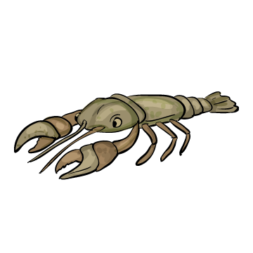
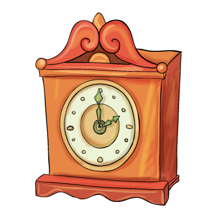

3. Melyik betűvel lehet helyettesíteni a vonalkát ahhoz, hogy értelmes szavak alakuljanak ki? Kösd össze a szókártyát a megfelelő betűkkel (kattints a betűre)! Ha jól dolgoztál, a megmaradt betűkből egy újabb értelmes szót lehet összerakni, kattints a képére!
á
ő
ó
í
r
é
a
_r


Melyik betűvel lehet helyettesíteni a vonalkát ahhoz, hogy értelmes szavak alakuljanak ki? Kösd össze a szókártyát a megfelelő betűkkel (kattints a betűre)! Ha jól dolgoztál, a megmaradt betűkből egy újabb értelmes szót lehet összerakni, kattints a képére!